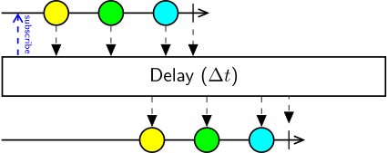

Class Delay
Represents an operator that delays the notifications of an observable sequence by the specified time interval.

The Delay operator modifies the source sequence by pausing for the specified duration before emitting each of the notifications in the original sequence. This has the effect of delaying the timing of the entire sequence of notifications by that specified time interval.
Delay is useful to model delayed responses to events in a control task, but also to access past data from a continuous stream in the future. In other words, if the stream timing is delayed, then any downstream observers grabbing data in the present moment will be receiving notifications from the past. For example, if you are recording data aligned on a temporal trigger detected in real-time, you can record data before the trigger simply by triggering the delayed sequence.
public class Delay : Combinator- Inheritance
-
Delay
- Inherited Members
Properties
DueTime
Gets or sets the time interval by which to delay the sequence.
public TimeSpan DueTime { get; set; }Property Value
Methods
Process<TSource>(IObservable<TSource>)
Delays the notifications of an observable sequence by the specified time interval.
public override IObservable<TSource> Process<TSource>(IObservable<TSource> source)Parameters
sourceIObservable<TSource>The source sequence to delay values for.
Returns
- IObservable<TSource>
The time-shifted sequence.
Type Parameters
TSourceThe type of the elements in the
sourcesequence.